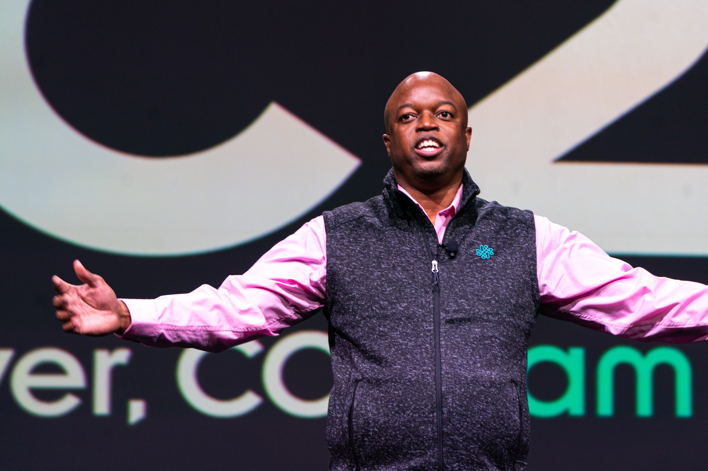

About
Scientist, Architect, Manager, Administrator, Leader!
I am a tenured, associate professor of Computer Science at Emory University working in Distributed, Runtime, and Operating Systems, especially in extreme scale High-Performance Computing contexts. We study challenges like Fault-tolerance, Debugging and Performance Analysis, and Middleware, recently integrating AI- and data-driven methodologies. I also am interested in Computing/STEM Education and Workforce Development.
I have 70+ peer-reviewed publications, totaling 2400+ citations, and two Top 100 R&D awards. I have delivered many technical and leadership Keynote and Plenary Talks and have held prominent university and conference leadership roles.
More to Come ...
For now, see the Resources for my portfolios, which contain a comprehensive list of my activities.
Resources and Contact
2-page Résumé • Full Academic CV • Google Scholar